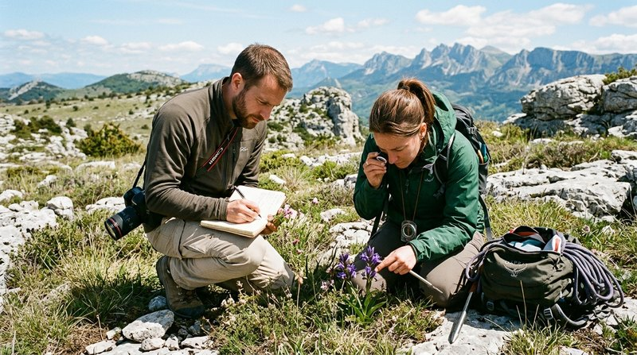
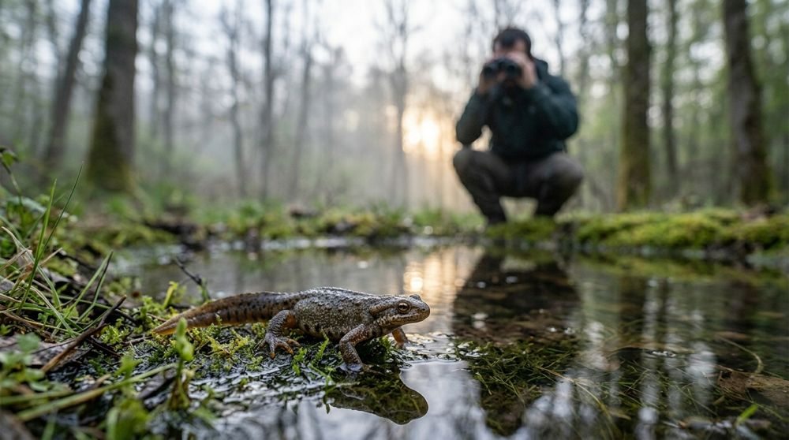
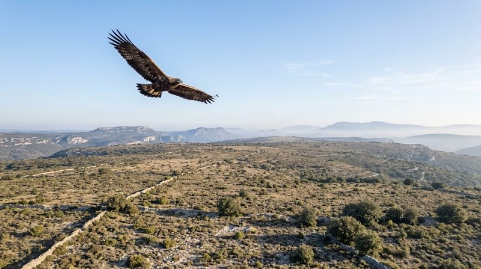
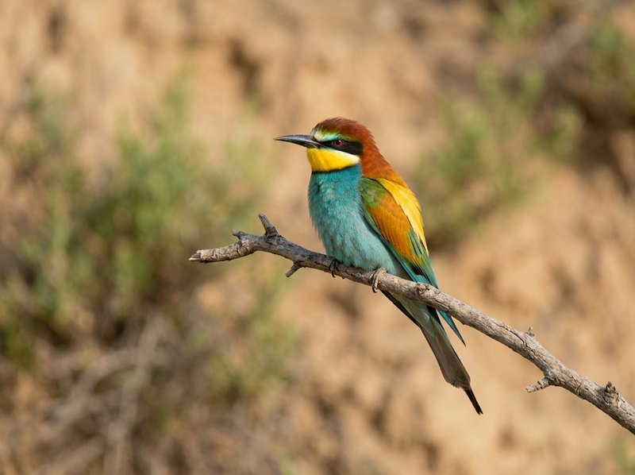
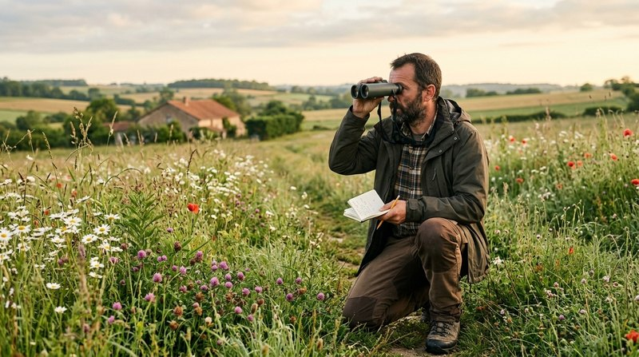

Restauration · Hérault
Pelouses à orchidées
Ouverture sélective de milieux en cours de fermeture ; la matière organique broyée est réutilisée pour des abris à reptiles, l'excédent est exporté.
PelousesOrchidéesReptiles
Gestion durable
Actions de restauration de milieux, de gestion d'espaces naturels et d'aménagements écologiques.


Ouverture sélective de milieux en cours de fermeture ; la matière organique broyée est réutilisée pour des abris à reptiles, l'excédent est exporté.

Maîtrise foncière, ouverture mécanisée, entretien pastoral, aménagements écologiques et suivi de la mesure.

Aménagement favorable au guêpier d'Europe sur une centrale photovoltaïque au sol.

Conseils techniques pour l'aménagement et la mise en valeur d'une centrale photovoltaïque au sol.